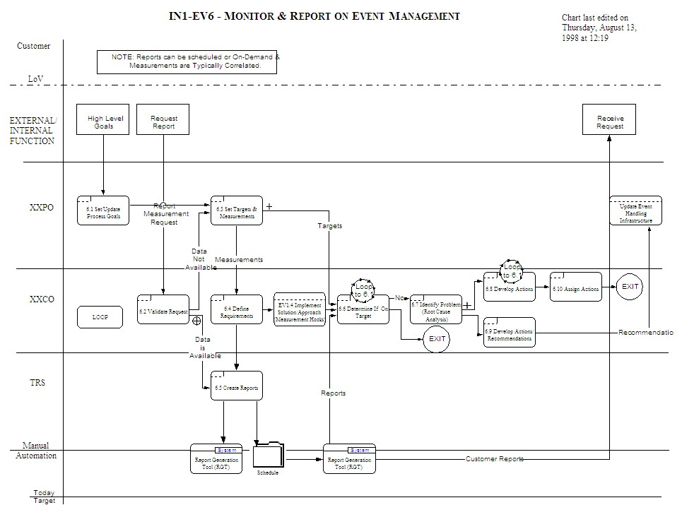

Workflow Chart and Narrative
Service/Process: IN1-EV6
Workflow Title: Monitor and Report on Event Management
Workflow Purpose: The purpose of this workflow is twofold: (1) to respond to requests for new Event Management
measurements and/or reports, and (2) to monitor Event Management measurements for variances from established business
targets. This workflow is similarly used to monitor and report on Managed Inventory.
Workflow Description: High Level DSM goals are cascaded down to form Event Management process goals. These
goals, in turn, are used by the Process Owner to establish Event Management targets and measurements. These new
measurements will result in the Coordinator defining new cyclic report requirements along with appropriate measurement
hooks (reference ”Implement Solution/Approach (Measurement Hooks” workflow)). The Technical Report Specialist deals
with the creation of new reports/report components using the Report Generation Tool (RGT) and defines the schedule to
automatically initiate reports (via the Job Scheduler).
Internal and external organizations may, from time to time, request ”ad hoc” reports, which the Coordinator validates
to determine whether measurements currently exist to support the report request. If the data or measurements are
currently not being collected, then new measurement hooks must be defined and created. The ”ad hoc” report is created
by the Technical Report Specialist and again scheduled for later generation using the RGT.
The Coordinator reviews the Event Management cyclic reports to determine if targets are being met. Where variances
exist, the Coordinator will identify root causes, and develop recommendations and actions accordingly. Recommendations
are passed on to the Process Owner and actions are assigned. As part of the Event Management process, based on ”lessons
learned”, measurements or targets may need to be adjusted/changed from time to time. These recommendations for
adjustments are routed to the Process Owner, who may cause reports and/or measurements to be changed.
Definitions:
Measurement Hook - a data collection point, typically imbedded in either system/application software, for the
purpose of capturing measurement data.
Process Time: Reports, which utilize existing measurements, can be created and generated within 4-5 hours.
Reports, which require new measurements, may be defined within 1 – 2 days. Using reports to manage according to plan
can take up to 2 to 3 days where variances need to be addressed and assigned.

The Intellectual Capital Management Enterprise Systems Management Database contains other examples including a complete
sample Event Management Workflow Package document.
|